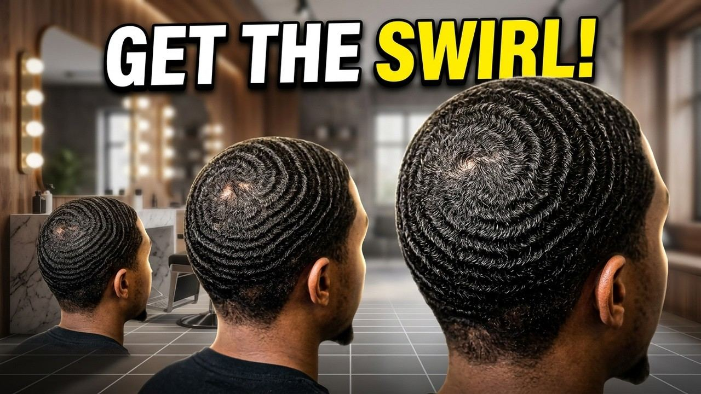

Advanced Crown Repair: Rebuilding a Broken Crown From the Centre Out
Every waver has stared at the back of their head in a three-way mirror and found it: the crown — the origin point of the entire pattern — broken, lined, or swirling in two directions at once. Crown damage is the most demoralising fault in waving because everything flows from that centre. It is also repairable, with the right protocol. 2-6 King Wavy (@26KingWavy) demonstrates the swirl technique in the video below; this guide builds the complete repair system around it.
Diagnose before you repair
Not all crown problems are the same problem. A line through the crown usually means the comb or brush crossed the centre against the swirl. A fork means two swirl directions are competing — often because the crown was never isolated in training and the surrounding angles dragged it both ways. A weak, thin-looking crown usually means over-brushing in circles, which wears the centre instead of training it.
Find your true swirl direction first: wet the hair, and watch which way the centre naturally wants to rotate as you brush gently outward. That direction is law. Every repair stroke that follows must agree with it, including strokes on the surrounding panels, which should feed into the swirl rather than pulling across it.
The isolation repair protocol
For four to six weeks, treat the crown as its own training zone. Comb the crown area first, in the swirl direction only, before touching the rest of the head. Then brush the crown in short, deliberate strokes radiating from the centre — ten minutes of crown-only work inside every session. Keep a plastic bag or your palm over the finished crown while you brush the other panels, so stray strokes stop undoing the repair.
Wolf through the repair. Length gives the retrained strands something to hold onto, and cutting mid-repair resets the very area you are rebuilding. If a cut is unavoidable, tell your barber to leave the crown long — a good barber will understand immediately.
Compression and the long close
Repair happens at night or not at all. Double-compress through the whole protocol, and make sure the durag's seam and cape sit centred — an off-centre tie drags the crown sideways for eight hours. Some wavers add a wave cap over the durag purely to keep the centre anchored during sleep.
Expect the close to be gradual: the line fades first, then the fork weakens, then one clean swirl wins. Photograph the crown weekly from the same angle. Crown repair is the slowest fix in waving, but a rebuilt crown upgrades the entire pattern — every panel connects better once the centre is telling the truth.
Watch: the crown swirl technique from 2-6 King Wavy — the core move of this repair protocol
Video: “Crown Swirl Technique That Actually Works | No More Broken Waves” by 2-6 King Wavy (@26KingWavy) · Watch on YouTube
Shop the gear
Everything in this guide runs on the right gear: a durag that holds compression without slipping, a cap that stays put, and fabric that treats your hair right. The durag.store launch lineup is built to that standard — dual-layer construction, long tails, and stitching made to survive the routine. Join the launch list and use code GOLDSTANDARD for 15% off your first order.
Keep learning
- Fixing Forks in Your Waves: Why They Form and How to Brush Them Out — Intermediate · Troubleshooting
- Uneven Waves and Weak Sides: The Rebalancing Program — Intermediate · Troubleshooting
- Forehead Lines From Your Durag: Causes and Complete Fixes — Basic · Troubleshooting
Sources: Video — “Crown Swirl Technique That Actually Works | No More Broken Waves” by 2-6 King Wavy (@26KingWavy), youtube.com. Guide written by the durag.store Wave Lab.